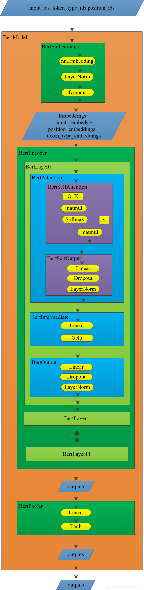

目录
写在最前面，这篇博客篇幅有点长，原因是贴的代码和图有点多，感兴趣的可以坚持读下去！
一、bert模型简介
2018年bert模型被谷歌提出，它在NLP的11项任务中取得了state of the art 的结果。bert模型是由很多层transformer结构堆叠而成，这里简单看看一下transformer的结构，上一张经典的图片，如下：
可以看到transformer是由encoder和decoder模块构成，而bert模型则是利用了transformer的encoder模块。最轻量的bert买模型是由12层transformer，12头注意力，768维的hidden state，在论文中的结构简图如下：

这样的双向transformer的结构，在NLP的大部分任务中取得了很好的效果，具备较强的泛化能力。由于使用了海量的语料进行了训练，bert模型可以使用pretrain——fine-tune这种方式来进行各类NLP任务。
bert与训练的流程：
这个过程包括两个任务，一个是Masked Language Model(遮掩语言模型)，另外一个是Next Sentence Prediction(下一句预测)。
Masked Language Model(遮掩语言模型)可以理解为是做完型填空，把语料中15%的词遮掩掉，来学习词和词之间的一些规律；
Next Sentence Prediction就是学习语料中上下文中2个句子之间的关系规律。
通过这2个阶段任务的学习，bert就会把文本的语法和语义信息学习到。bert模型中的self-attention机制可以使用文本其他的词来增强目标词的语义表示，这也是bert模型吊打其他模型的一个关键原因。
bert模型的输入
bert模型的输入可以是一个句子或者句子对，代码层面来说，就是输入了句子或者句子对对应的3个向量。它们分别是token embedding，segment embedding和position embedding，具体的含义：
token embedding：句子的词向量
segment embedding：是那个句子的0和1
position embedding：位置向量，指明每个字在句中的位置。
关于position embedding这里有两种求法，一种是有相应的三角函数公式得出的，这种是绝对向量；还有一种是学习得到的，这种是相对向量。具体形式如下：
二、huggingface的bert源码浅析
关于bert模型的使用，我主要是使用huggingface的transformer库来调用bert和使用——一般是直接用来bert来获取词向量。这里就bert的使用和huggingface中的源码进行一些解读。
bert提取文本词向量
首先看一段简单的代码，使用huggingface的transformers(其实就是实现的bert)来提取句——我爱武汉！我爱中国！——的向量。代码如下：
- from transformers import BertModel,BertTokenizer,BertConfig
- import torch
-
- config = BertConfig.from_pretrained('pretrain_model/chinese-bert-wwm')#第一步加载模型配置文件
- bertmodel = BertModel.from_pretrained('pretrain_model/chinese-bert-wwm',config=config)#第二步初始化模型，并加载权重
- # print('***************************bertmodel***************************')
- tokenizer = BertTokenizer.from_pretrained('pretrain_model/chinese-bert-wwm')#第三步加载tokenizer
-
- text1 = '我爱武汉！我爱中国！'
- tokeniz_text1 = tokenizer.tokenize(text1)
- # print(tokeniz_text1)
- # print('tokeniz_text1:',len(tokeniz_text1))
- indexed_tokens_1 = tokenizer.convert_tokens_to_ids(tokeniz_text1)
- print('len(indexed_tokens_1):',len(indexed_tokens_1))
- print(indexed_tokens_1)
-
-
-
- input_ids_1 = indexed_tokens_1
- # print(indexed_tokens_1)
- # print('indexed_tokens_1:',len(indexed_tokens_1))
- segments_ids_1 = [0]*len(input_ids_1)#其实这个输入可以不用的，因为是单句的原因
- input_masks_1 = [1]*len(input_ids_1)#其实这个输入可以不用的，因为是单句的原因
-
- input_ids_1_tensor = torch.tensor([input_ids_1])
- vector1,pooler1 = bertmodel(input_ids_1_tensor)#应该是输入3个向量的，但是单句情况下，它自会自己做判断，然后自动生成对应的segments_ids和input_masks向量
- #这里的输出最后一层的last_hidden_state和最后一层首个token的hidden-state
-
-
- text2 = '[CLS]我爱武汉！我爱中国![SEP]'
- tokeniz_text2 = tokenizer.tokenize(text2)
- indexed_tokens_2 = tokenizer.convert_tokens_to_ids(tokeniz_text2)
-
- input_ids_2 = indexed_tokens_2
- segments_ids_2 = [0]*len(input_ids_2)#其实这个输入可以不用的，因为是单句的原因
- input_masks_2 = [1]*len(input_ids_2)#其实这个输入可以不用的，因为是单句的原因
-
- input_ids_2_tensor = torch.tensor([input_ids_2])
- vector2,pooler2 = bertmodel(input_ids_2_tensor)
- print('pooler2:',pooler2)
- print('vector2[:,0:1,:]:',vector2[:,0:1,:])
-
-
-
- text1_encode = tokenizer.encode(text1,add_special_tokens=True)
- print('len(text1_encode):',len(text1_encode))
- print('text1_encode:',text1_encode)
- #这里的text1_encode和indexed_tokens_2是一模一样的，encode()函数会自动为文本添加特殊字符[UNK][CLS][SEP][MASK]等
以上代码是基于pytorch来实现的，同时应用到了transoformers库！可以看到bert模型的使用非常简单！
第一步，初始化bert模型和加载权重。这个步骤中，首先加载配置文件、然后加载bert模型和载入权重。
第二步，对输入文本做词表映射，形成初始词向量。
第三步，输入喂入bert模型中得到输入文本的结果向量。
文中是bert模型的输入我这里只给出了一个那就是input_ids,另外的2个没有给出。这里的原因就是这里是单个句子，模型内部可以对另外2个输入做自动添加的处理——并不是没有，这点要注意到。
这里有个疑问因为bert的输入文本得添加一个[cls]特殊字符，我认为最后的输出lsat_hidden_state中的lsat_hidden_state[:,0:1,:]应该和pooler结果是一样的，可是这里是不一样的，有点理解的偏差，不知道为什么。
BertModel代码阅读
通过上文中的代码，大致可以知道怎么调用一些API来创建bert模型和应用它。那么huggingface中是怎么实现BertModel的这个也是比较重要的，这里我们就好好阅读以下其中关于BertModel实现的代码。看一张transformers项目文件结构图：
这么面封装了很多模型的构建，我们主要是阅读modeling_bert.py文件，它在里面详细的展示了如何构建一个Bert模型的：
- class BertModel(BertPreTrainedModel):
- """
- .......
- """
-
- def __init__(self, config):
- super().__init__(config)
- self.config = config
-
- self.embeddings = BertEmbeddings(config)
- self.encoder = BertEncoder(config)
- self.pooler = BertPooler(config)
-
- self.init_weights()
-
- def get_input_embeddings(self):
- return self.embeddings.word_embeddings
-
- def set_input_embeddings(self, value):
- self.embeddings.word_embeddings = value
-
- def _prune_heads(self, heads_to_prune):
- """ Prunes heads of the model.
- heads_to_prune: dict of {layer_num: list of heads to prune in this layer}
- See base class PreTrainedModel
- """
- for layer, heads in heads_to_prune.items():
- self.encoder.layer[layer].attention.prune_heads(heads)
-
- @add_start_docstrings_to_callable(BERT_INPUTS_DOCSTRING)
- def forward(
- self,
- input_ids=None,
- attention_mask=None,
- token_type_ids=None,
- position_ids=None,
- head_mask=None,
- inputs_embeds=None,
- encoder_hidden_states=None,
- encoder_attention_mask=None,
- ):
- r""".......
- """
-
- if input_ids is not None and inputs_embeds is not None:
- raise ValueError("You cannot specify both input_ids and inputs_embeds at the same time")
- elif input_ids is not None:
- input_shape = input_ids.size()
- elif inputs_embeds is not None:
- input_shape = inputs_embeds.size()[:-1]
- else:
- raise ValueError("You have to specify either input_ids or inputs_embeds")
-
- device = input_ids.device if input_ids is not None else inputs_embeds.device
-
- if attention_mask is None:
- attention_mask = torch.ones(input_shape, device=device)
- if token_type_ids is None:
- token_type_ids = torch.zeros(input_shape, dtype=torch.long, device=device)
-
- # We can provide a self-attention mask of dimensions [batch_size, from_seq_length, to_seq_length]
- # ourselves in which case we just need to make it broadcastable to all heads.
- extended_attention_mask: torch.Tensor = self.get_extended_attention_mask(
- attention_mask, input_shape, self.device
- )
-
- # If a 2D ou 3D attention mask is provided for the cross-attention
- # we need to make broadcastabe to [batch_size, num_heads, seq_length, seq_length]
- if self.config.is_decoder and encoder_hidden_states is not None:
- encoder_batch_size, encoder_sequence_length, _ = encoder_hidden_states.size()
- encoder_hidden_shape = (encoder_batch_size, encoder_sequence_length)
- if encoder_attention_mask is None:
- encoder_attention_mask = torch.ones(encoder_hidden_shape, device=device)
- encoder_extended_attention_mask = self.invert_attention_mask(encoder_attention_mask)
- else:
- encoder_extended_attention_mask = None
-
- # Prepare head mask if needed
- # 1.0 in head_mask indicate we keep the head
- # attention_probs has shape bsz x n_heads x N x N
- # input head_mask has shape [num_heads] or [num_hidden_layers x num_heads]
- # and head_mask is converted to shape [num_hidden_layers x batch x num_heads x seq_length x seq_length]
- head_mask = self.get_head_mask(head_mask, self.config.num_hidden_layers)
-
- embedding_output = self.embeddings(
- input_ids=input_ids, position_ids=position_ids, token_type_ids=token_type_ids, inputs_embeds=inputs_embeds
- )
- encoder_outputs = self.encoder(
- embedding_output,
- attention_mask=extended_attention_mask,
- head_mask=head_mask,
- encoder_hidden_states=encoder_hidden_states,
- encoder_attention_mask=encoder_extended_attention_mask,
- )
- sequence_output = encoder_outputs[0]
- pooled_output = self.pooler(sequence_output)
-
- outputs = (sequence_output, pooled_output,) + encoder_outputs[
- 1:
- ] # add hidden_states and attentions if they are here
- return outputs # sequence_output, pooled_output, (hidden_states), (attentions)
以上就是BertModel的全部代码，可以看到在BertModel类中，首先__init__()函数中定义了模型的基本模块，然后在forward()函数里面使用这些结构模块具体实现了Bert的逻辑。
- def __init__(self, config):
- super().__init__(config)
- self.config = config
-
- self.embeddings = BertEmbeddings(config)
- self.encoder = BertEncoder(config)
- self.pooler = BertPooler(config)
-
- self.init_weights()
__init__()函数中定义的模型模块主要是3个，分别是BertEmbedding、BertEncoder和BertPooler。然后在forward()，输入顺序的经过这3个模块的处理就得到了我们要的结果——对应文本的bert向量。
下面来阅读forward()：
- if input_ids is not None and inputs_embeds is not None:
- raise ValueError("You cannot specify both input_ids and inputs_embeds at the same time")
- elif input_ids is not None:
- input_shape = input_ids.size()
- elif inputs_embeds is not None:
- input_shape = inputs_embeds.size()[:-1]
- else:
- raise ValueError("You have to specify either input_ids or inputs_embeds")
-
- device = input_ids.device if input_ids is not None else inputs_embeds.device
-
- if attention_mask is None:
- attention_mask = torch.ones(input_shape, device=device)
- if token_type_ids is None:
- token_type_ids = torch.zeros(input_shape, dtype=torch.long, device=device)
-
- # We can provide a self-attention mask of dimensions [batch_size, from_seq_length, to_seq_length]
- # ourselves in which case we just need to make it broadcastable to all heads.
- if attention_mask.dim() == 3:
- extended_attention_mask = attention_mask[:, None, :, :]
- elif attention_mask.dim() == 2:
- # Provided a padding mask of dimensions [batch_size, seq_length]
- # - if the model is a decoder, apply a causal mask in addition to the padding mask
- # - if the model is an encoder, make the mask broadcastable to [batch_size, num_heads, seq_length, seq_length]
- if self.config.is_decoder:
- batch_size, seq_length = input_shape
- seq_ids = torch.arange(seq_length, device=device)
- causal_mask = seq_ids[None, None, :].repeat(batch_size, seq_length, 1) <= seq_ids[None, :, None]
- causal_mask = causal_mask.to(
- attention_mask.dtype
- ) # causal and attention masks must have same type with pytorch version < 1.3
- extended_attention_mask = causal_mask[:, None, :, :] * attention_mask[:, None, None, :]
- else:
- extended_attention_mask = attention_mask[:, None, None, :]
- else:
- raise ValueError(
- "Wrong shape for input_ids (shape {}) or attention_mask (shape {})".format(
- input_shape, attention_mask.shape
- )
- )
-
- # Since attention_mask is 1.0 for positions we want to attend and 0.0 for
- # masked positions, this operation will create a tensor which is 0.0 for
- # positions we want to attend and -10000.0 for masked positions.
- # Since we are adding it to the raw scores before the softmax, this is
- # effectively the same as removing these entirely.
- extended_attention_mask = extended_attention_mask.to(dtype=next(self.parameters()).dtype) # fp16 compatibility
- extended_attention_mask = (1.0 - extended_attention_mask) * -10000.0
-
- # If a 2D ou 3D attention mask is provided for the cross-attention
- # we need to make broadcastabe to [batch_size, num_heads, seq_length, seq_length]
- if self.config.is_decoder and encoder_hidden_states is not None:
- encoder_batch_size, encoder_sequence_length, _ = encoder_hidden_states.size()
- encoder_hidden_shape = (encoder_batch_size, encoder_sequence_length)
- if encoder_attention_mask is None:
- encoder_attention_mask = torch.ones(encoder_hidden_shape, device=device)
-
- if encoder_attention_mask.dim() == 3:
- encoder_extended_attention_mask = encoder_attention_mask[:, None, :, :]
- elif encoder_attention_mask.dim() == 2:
- encoder_extended_attention_mask = encoder_attention_mask[:, None, None, :]
- else:
- raise ValueError(
- "Wrong shape for encoder_hidden_shape (shape {}) or encoder_attention_mask (shape {})".format(
- encoder_hidden_shape, encoder_attention_mask.shape
- )
- )
-
- encoder_extended_attention_mask = encoder_extended_attention_mask.to(
- dtype=next(self.parameters()).dtype
- ) # fp16 compatibility
- encoder_extended_attention_mask = (1.0 - encoder_extended_attention_mask) * -10000.0
- else:
- encoder_extended_attention_mask = None
-
- # Prepare head mask if needed
- # 1.0 in head_mask indicate we keep the head
- # attention_probs has shape bsz x n_heads x N x N
- # input head_mask has shape [num_heads] or [num_hidden_layers x num_heads]
- # and head_mask is converted to shape [num_hidden_layers x batch x num_heads x seq_length x seq_length]
- if head_mask is not None:
- if head_mask.dim() == 1:
- head_mask = head_mask.unsqueeze(0).unsqueeze(0).unsqueeze(-1).unsqueeze(-1)
- head_mask = head_mask.expand(self.config.num_hidden_layers, -1, -1, -1, -1)
- elif head_mask.dim() == 2:
- head_mask = (
- head_mask.unsqueeze(1).unsqueeze(-1).unsqueeze(-1)
- ) # We can specify head_mask for each layer
- head_mask = head_mask.to(
- dtype=next(self.parameters()).dtype
- ) # switch to fload if need + fp16 compatibility
- else:
- head_mask = [None] * self.config.num_hidden_layers
以上是一些预处理的代码。判定input_ids的合法性，不能为空不能和inputs_embeds同时输入；接着就获取使用的设备是CPU还是GPU；判定attention_mask和token_type_ids的合法性，为None的话就新建一个；处理attention_mask得到encoder_extended_attention_mask，把它传播给所有的注意力头；最后就是判定是否启用decoder——bert模型是基于encoder的，我认为这里就不必要做这个判定，bert的encoder的结果只是传递给下一层encoder，并没有传递到decoder。
下面具体看核心的部分。
上面把输入做一些预处理后，使得输入都合法，然后就可以喂入模型的功能模块中。第一个就是
- embedding_output = self.embeddings(
- input_ids=input_ids, position_ids=position_ids, token_type_ids=token_type_ids, inputs_embeds=inputs_embeds
- )
BertEmbedding子模型
其中的self.embeddings()就是__inti__()的BertEmbeddings(config)模块，它可以看做是一个起embedding功能作用的子模型，具体代码：
- class BertEmbeddings(nn.Module):
- """Construct the embeddings from word, position and token_type embeddings.
- """
-
- def __init__(self, config):
- super().__init__()
- self.word_embeddings = nn.Embedding(config.vocab_size, config.hidden_size, padding_idx=0)
- self.position_embeddings = nn.Embedding(config.max_position_embeddings, config.hidden_size)
- self.token_type_embeddings = nn.Embedding(config.type_vocab_size, config.hidden_size)
-
- # self.LayerNorm is not snake-cased to stick with TensorFlow model variable name and be able to load
- # any TensorFlow checkpoint file
- self.LayerNorm = BertLayerNorm(config.hidden_size, eps=config.layer_norm_eps)
- self.dropout = nn.Dropout(config.hidden_dropout_prob)
-
- def forward(self, input_ids=None, token_type_ids=None, position_ids=None, inputs_embeds=None):
- if input_ids is not None:
- input_shape = input_ids.size()
- else:
- input_shape = inputs_embeds.size()[:-1]
-
- seq_length = input_shape[1]
- device = input_ids.device if input_ids is not None else inputs_embeds.device
- if position_ids is None:
- position_ids = torch.arange(seq_length, dtype=torch.long, device=device)
- position_ids = position_ids.unsqueeze(0).expand(input_shape)
- if token_type_ids is None:
- token_type_ids = torch.zeros(input_shape, dtype=torch.long, device=device)
-
- if inputs_embeds is None:
- inputs_embeds = self.word_embeddings(input_ids)
- position_embeddings = self.position_embeddings(position_ids)
- token_type_embeddings = self.token_type_embeddings(token_type_ids)
-
- embeddings = inputs_embeds + position_embeddings + token_type_embeddings
- embeddings = self.LayerNorm(embeddings)
- embeddings = self.dropout(embeddings)
- return embeddings
它的具体作用就是：首先把我们输入的input_ids、token_type_ids和position_ids——(这里输入的是对应元素在词典中的index集合)经过torch.nn.Embedding()在各自的词典中得到词嵌入。然后把这3个向量直接做加法运算，接着做层归一化以及dropout()操作。这里为何可以直接相加是可以做一个专门的问题来讨论的，这里的归一化的作用应该就是避免一些数值问题、梯度问题和模型收敛问题以及分布改变问题，dropout操作随机丢弃掉一部分特征，可以增加模型的泛化性能。
BertEncoder
经过上述的处理后，我们就得到了一个维度是[batch_size,sequence_length,hidden_states]的向量embeddings。然后再把这个embeddings输入到Encoder中，代码如下，参数都很清晰明确：
- encoder_outputs = self.encoder(
- embedding_output,
- attention_mask=extended_attention_mask,
- head_mask=head_mask,
- encoder_hidden_states=encoder_hidden_states,
- encoder_attention_mask=encoder_extended_attention_mask,
- )
这里的self.encoder同样是__init__()中的BertEncoder(config)模型，全部代码如下：
- class BertEncoder(nn.Module):
- def __init__(self, config):
- super().__init__()
- self.output_attentions = config.output_attentions
- self.output_hidden_states = config.output_hidden_states
- self.layer = nn.ModuleList([BertLayer(config) for _ in range(config.num_hidden_layers)])
-
- def forward(
- self,
- hidden_states,
- attention_mask=None,
- head_mask=None,
- encoder_hidden_states=None,
- encoder_attention_mask=None,
- ):
- all_hidden_states = ()
- all_attentions = ()
- for i, layer_module in enumerate(self.layer):
- if self.output_hidden_states:
- all_hidden_states = all_hidden_states + (hidden_states,)
-
- layer_outputs = layer_module(
- hidden_states, attention_mask, head_mask[i], encoder_hidden_states, encoder_attention_mask
- )
- hidden_states = layer_outputs[0]
-
- if self.output_attentions:
- all_attentions = all_attentions + (layer_outputs[1],)
-
- # Add last layer
- if self.output_hidden_states:
- all_hidden_states = all_hidden_states + (hidden_states,)
-
- outputs = (hidden_states,)
- if self.output_hidden_states:
- outputs = outputs + (all_hidden_states,)
- if self.output_attentions:
- outputs = outputs + (all_attentions,)
- return outputs
其中模型定义部分的核心代码如下：
self.layer = nn.ModuleList([BertLayer(config) for _ in range(config.num_hidden_layers)])通过这句代码和config中的参数——"num_hidden_layers": 12——可以得出BertEncoder使用12个(层)BertLayer组成的。对每一层的bertlayer在forward()中的for循环做如下操作：
- for i, layer_module in enumerate(self.layer):
- if self.output_hidden_states:
- all_hidden_states = all_hidden_states + (hidden_states,)
-
- layer_outputs = layer_module(
- hidden_states, attention_mask, head_mask[i], encoder_hidden_states, encoder_attention_mask
- )
- hidden_states = layer_outputs[0]
-
- if self.output_attentions:
- all_attentions = all_attentions + (layer_outputs[1],)
更新hidden_states(也就是layer_outputs[0])，然后把更新后的hidden_states传入到下一层BertLayer中，同时把每一层的hidden_states和attentions(也就是layer_outputs[1])记录下来，然后作为一个整体输出。所有最后的输出里包含的有最后一层BertLayer的hidden_states和12层所有的hidden_states以及attentions。
BertLayer具体又是什么样的呢？这里就需要看看具体的BertLayer的实现：
- class BertLayer(nn.Module):
- def __init__(self, config):
- super().__init__()
- self.attention = BertAttention(config)
- self.is_decoder = config.is_decoder
- if self.is_decoder:
- self.crossattention = BertAttention(config)
- self.intermediate = BertIntermediate(config)
- self.output = BertOutput(config)
可以看到BertLayer是由BertAttention()、BertIntermediate()和BertOutput()构成。它的forward()是比较简单的，没有什么奇特的操作，都是顺序的把输入经过BertAttention()、BertIntermediate()和BertOutput()这些子模型。这里主要来看看这些子模型的实现：
BertAttention
这里它又嵌套了一层，由BertSelfAttention()和BertSelfOutput()子模型组成！
这里马上就看到self-attention机制的实现了！感觉好激动！——Self-Attention则利用了Attention机制，计算每个单词与其他所有单词之间的关联(说实话理解的不是很透彻！)
- class BertSelfAttention(nn.Module):
- def __init__(self, config):
- super().__init__()
- if config.hidden_size % config.num_attention_heads != 0 and not hasattr(config, "embedding_size"):
- raise ValueError(
- "The hidden size (%d) is not a multiple of the number of attention "
- "heads (%d)" % (config.hidden_size, config.num_attention_heads)
- )
- self.output_attentions = config.output_attentions
-
- self.num_attention_heads = config.num_attention_heads
- self.attention_head_size = int(config.hidden_size / config.num_attention_heads)
- self.all_head_size = self.num_attention_heads * self.attention_head_size
-
- self.query = nn.Linear(config.hidden_size, self.all_head_size)
- self.key = nn.Linear(config.hidden_size, self.all_head_size)
- self.value = nn.Linear(config.hidden_size, self.all_head_size)
-
- self.dropout = nn.Dropout(config.attention_probs_dropout_prob)
-
- def transpose_for_scores(self, x):
- new_x_shape = x.size()[:-1] + (self.num_attention_heads, self.attention_head_size)
- x = x.view(*new_x_shape)
- return x.permute(0, 2, 1, 3)
-
- def forward(
- self,
- hidden_states,
- attention_mask=None,
- head_mask=None,
- encoder_hidden_states=None,
- encoder_attention_mask=None,
- ):
- mixed_query_layer = self.query(hidden_states)
-
- # If this is instantiated as a cross-attention module, the keys
- # and values come from an encoder; the attention mask needs to be
- # such that the encoder's padding tokens are not attended to.
- if encoder_hidden_states is not None:
- mixed_key_layer = self.key(encoder_hidden_states)
- mixed_value_layer = self.value(encoder_hidden_states)
- attention_mask = encoder_attention_mask
- else:
- mixed_key_layer = self.key(hidden_states)
- mixed_value_layer = self.value(hidden_states)
-
- query_layer = self.transpose_for_scores(mixed_query_layer)
- key_layer = self.transpose_for_scores(mixed_key_layer)
- value_layer = self.transpose_for_scores(mixed_value_layer)
-
- # Take the dot product between "query" and "key" to get the raw attention scores.
- attention_scores = torch.matmul(query_layer, key_layer.transpose(-1, -2))
- attention_scores = attention_scores / math.sqrt(self.attention_head_size)
- if attention_mask is not None:
- # Apply the attention mask is (precomputed for all layers in BertModel forward() function)
- attention_scores = attention_scores + attention_mask
-
- # Normalize the attention scores to probabilities.
- attention_probs = nn.Softmax(dim=-1)(attention_scores)
-
- # This is actually dropping out entire tokens to attend to, which might
- # seem a bit unusual, but is taken from the original Transformer paper.
- attention_probs = self.dropout(attention_probs)
-
- # Mask heads if we want to
- if head_mask is not None:
- attention_probs = attention_probs * head_mask
-
- context_layer = torch.matmul(attention_probs, value_layer)
-
- context_layer = context_layer.permute(0, 2, 1, 3).contiguous()
- new_context_layer_shape = context_layer.size()[:-2] + (self.all_head_size,)
- context_layer = context_layer.view(*new_context_layer_shape)
-
- outputs = (context_layer, attention_probs) if self.output_attentions else (context_layer,)
- return outputs
阅读代码之前先回顾一下，self-attention的公式是什么样的，公式编辑比较麻烦直接上2个图，都是来自Attention机制详解（二）——Self-Attention与Transformer文章中：
首先定义Q、K、V
然后应用到公式中：

以上就是单个头的self-attention的公式，多头的话就可以计算多次，然后在合并起来。这里就可以应用到矩阵运算了，还要注意的点就是Q、K、V的学习参数都是共享的——(要去验证)，代码对应的就是：
- self.query = nn.Linear(config.hidden_size, self.all_head_size)
- self.key = nn.Linear(config.hidden_size, self.all_head_size)
- self.value = nn.Linear(config.hidden_size, self.all_head_size)
- #注意这里的nn.Linear包含的学习参数一个是权重参数weights一个是偏置参数bias
- #而且这里的query、key以及value它们的参数不一样，也就是并不共享参数
参数都包含在nn.Linear中了，这里的self.query对应的是12个头的self-attention机制对应的Q的学习参数模型，当然query、key以及value它们的参数不一样，也就是并不共享参数。
那么在forward()中是如何实现的呢？
- mixed_query_layer = self.query(hidden_states)#计算Q
- if encoder_hidden_states is not None:
- mixed_key_layer = self.key(encoder_hidden_states)
- mixed_value_layer = self.value(encoder_hidden_states)
- attention_mask = encoder_attention_mask
- else:
- mixed_key_layer = self.key(hidden_states) #计算K
- mixed_value_layer = self.value(hidden_states)#计算V
-
- #做转置操作——这有点特殊：mixed_query_layer[batch_size,sequence_length,hidden_states]
- #query_layer的维度：[batch_size,num_attention_heads,sequence_length,attention_head_size]
- query_layer = self.transpose_for_scores(mixed_query_layer)
- key_layer = self.transpose_for_scores(mixed_key_layer)
- value_layer = self.transpose_for_scores(mixed_value_layer)
-
- #Q和K做点积
- attention_scores = torch.matmul(query_layer, key_layer.transpose(-1, -2))
- #Q和K做点积后然后除以根号下多头主力的尺寸
- attention_scores = attention_scores / math.sqrt(self.attention_head_size)
- if attention_mask is not None:
- # Apply the attention mask is (precomputed for all layers in BertModel forward() function)
- attention_scores = attention_scores + attention_mask
-
- # Normalize the attention scores to probabilities.
- #做softmax操作，归一化
- attention_probs = nn.Softmax(dim=-1)(attention_scores)
-
- # This is actually dropping out entire tokens to attend to, which might
- # seem a bit unusual, but is taken from the original Transformer paper.
- attention_probs = self.dropout(attention_probs)
-
- # Mask heads if we want to
- if head_mask is not None:
- attention_probs = attention_probs * head_mask
- #中间结果和V做点积，得到最终结果——注意力得分也就是公式中的Z
- context_layer = torch.matmul(attention_probs, value_layer)
以上代码的中文注释就把计算过程分析清楚了，计算mixed_query_layer、mixed_key_layer和mixed_value_layer，然后做转置(说是维度变换更贴切一点)；接着mixed_query_layer、mixed_key_layer做点积操作，然后除以注意力头的尺寸的开方，做softmax操作；最后和mixed_value_layer相乘，得到注意力得分————矩阵计算代码就很好的实现了self-attention。
以上就是完成了self-attention，然后接下来就进入BertSelfOutput():
- class BertSelfOutput(nn.Module):
- def __init__(self, config):
- super().__init__()
- self.dense = nn.Linear(config.hidden_size, config.hidden_size)
- self.LayerNorm = BertLayerNorm(config.hidden_size, eps=config.layer_norm_eps)
- self.dropout = nn.Dropout(config.hidden_dropout_prob)
-
- def forward(self, hidden_states, input_tensor):
- hidden_states = self.dense(hidden_states)
- hidden_states = self.dropout(hidden_states)
- hidden_states = self.LayerNorm(hidden_states + input_tensor)
- return hidden_states
以上BertSelfOutput()代码很简单，把self-attention输出的结果经过线性模型和dropout操作，最后做层归一化。到这里就跳出了BertAttention()模型，然后就进入中间层BertIntermediate()。
BertIntermediate
BertIntermediate()作为中间层代码很简单：
- class BertIntermediate(nn.Module):
- def __init__(self, config):
- super().__init__()
- self.dense = nn.Linear(config.hidden_size, config.intermediate_size)
- if isinstance(config.hidden_act, str):
- self.intermediate_act_fn = ACT2FN[config.hidden_act]
- else:
- self.intermediate_act_fn = config.hidden_act
-
- def forward(self, hidden_states):
- hidden_states = self.dense(hidden_states)
- hidden_states = self.intermediate_act_fn(hidden_states)
- return hidden_states
经过一个全连接层，由于config.hidden_size<config.intermediate_size，这里的Linear把特征空间变大了，然后进过了gelu激活函数，增加了特征的非线性性。
BertOutput(config)
跳出BertIntermediate()作为中间层后，就进入了BertOutput(config)模型，这个是BertLayer()模型的最后一个子模型。
- class BertOutput(nn.Module):
- def __init__(self, config):
- super().__init__()
- self.dense = nn.Linear(config.intermediate_size, config.hidden_size)
- self.LayerNorm = BertLayerNorm(config.hidden_size, eps=config.layer_norm_eps)
- self.dropout = nn.Dropout(config.hidden_dropout_prob)
-
- def forward(self, hidden_states, input_tensor):
- hidden_states = self.dense(hidden_states)
- hidden_states = self.dropout(hidden_states)
- hidden_states = self.LayerNorm(hidden_states + input_tensor)
- return hidden_states
经过线性模型和dropout操作，最后做层归一化，把特征空间又缩小回来了。最后输出一个hidden_states，这里就是一个BertLayer()的输出了。
BertPooler()
然后经历了12个BertLayer()的操作，一层一层的变换，最后得出的outputs进入BertPooler():
- sequence_output = encoder_outputs[0]
- pooled_output = self.pooler(sequence_output)
pooler代码如下：
- class BertPooler(nn.Module):
- def __init__(self, config):
- super().__init__()
- self.dense = nn.Linear(config.hidden_size, config.hidden_size)
- self.activation = nn.Tanh()
-
- def forward(self, hidden_states):
- # We "pool" the model by simply taking the hidden state corresponding
- # to the first token.
- first_token_tensor = hidden_states[:, 0]
- pooled_output = self.dense(first_token_tensor)
- pooled_output = self.activation(pooled_output)
- return pooled_output
-
-
- #以上的pooler作用要具体的去调试hidden_states的shape。
由代码可知这个pooler的功能就是把last_hidden_states的第二维的第一维也就是文本对应的第一个；。。。、。。
以上差不多就是BertModel的具体实现，由于这个模型的代码嵌套调用过多，可能理解起来有一定的困惑，那么接下来就需要一个图片来可视化理解。上图：

上图是huggingface中的BertModel的结构流程图(简图，有很多疏漏的地方勿怪！)，bertModel的输入和基本的子模型以及数据的流向都显示出来了，对应着代码理解起来更加方便。黄色的图形就是torch中的基本函数模块(这里的Q、K和V不是)，其他颜色的矩形就是模型，平行四边形就是数据。
以上就是对BertModel实现代码的简单解析，里面涉及到很多的细节：不同模型模块的参数以及它们的维度信息，还有就是变量的维度变化，以及每个模型模块的具体作用和意义，没有去深究，读者有精力的话可以自己去深究。
三、Bert文本分类任务实战
这里我们要写一个使用transformers项目中的分类器来实现一个简单的文本分类任务，这里我们没有自己取重写Dataloader以及模型的训练，就是直接把transformers项目中的bert分类器拿过来进行fine-tune，工作量少，结果也比较好！当然也可以完全自己实现(前面也自己实现过一个基于bert的句子分类的任务——使用bert模型做句子分类，有兴趣的可以移步)，后续有时间的话可以写一个各个模型文本分类任务的比较博客，更加熟练文本分类的一些代码coding和知识——增加熟练度，也可以给大家分享一下。
来看本文的transformers项目中的bert分类器进行fine-tune作文本分类的任务，在这个项目里面已经把全部的代码写好了，我们只需要把我们的文本处理成项目能够识别和读取的形式。简单的分析一下，分类任务的代码：
主要的分类任务的代码是在run_glue.py文件中，这里面定义了main函数，命令行参数接收器，模型的加载和调用，模型的训练以及验证，和数据读取以及处理的功能模块调用。
我们看一下这里调用的分类模型，代码是这样的：
- model = AutoModelForSequenceClassification.from_pretrained(
- args.model_name_or_path,
- from_tf=bool(".ckpt" in args.model_name_or_path),
- config=config,
- cache_dir=args.cache_dir,
- )
其实最终这里的AutoModelForSequenceClassification.from_pretrained()调用的是modeling_bert.py中的BertForSequenceClassification类，它就是具体的分类器实现：
- class BertForSequenceClassification(BertPreTrainedModel):
- def __init__(self, config):
- super().__init__(config)
- self.num_labels = config.num_labels
-
- self.bert = BertModel(config)
- self.dropout = nn.Dropout(config.hidden_dropout_prob)
- self.classifier = nn.Linear(config.hidden_size, self.config.num_labels)
-
- self.init_weights()
-
- def forward(
- self,
- input_ids=None,
- attention_mask=None,
- token_type_ids=None,
- position_ids=None,
- head_mask=None,
- inputs_embeds=None,
- labels=None,
- ):
- outputs = self.bert(
- input_ids,
- attention_mask=attention_mask,
- token_type_ids=token_type_ids,
- position_ids=position_ids,
- head_mask=head_mask,
- inputs_embeds=inputs_embeds,
- )
-
- pooled_output = outputs[1]
-
- pooled_output = self.dropout(pooled_output)
- logits = self.classifier(pooled_output)
-
- outputs = (logits,) + outputs[2:] # add hidden states and attention if they are here
-
- if labels is not None:
- if self.num_labels == 1:
- # We are doing regression
- loss_fct = MSELoss()
- loss = loss_fct(logits.view(-1), labels.view(-1))
- else:
- loss_fct = CrossEntropyLoss()
- loss = loss_fct(logits.view(-1, self.num_labels), labels.view(-1))
- outputs = (loss,) + outputs
-
- return outputs
模型调用了BertModel，然后做使用nn.Linear(config.hidden_size, self.config.num_labels)做分类，loss函数是常用的交叉熵损失函数。以上就是分类器的一些简单的分析。 我们要做的工作就是仿照项目里的代码写一个任务处理器：
项目目录结构：transformerer_local/data/glue.py，注意这里的transformerer_local原本应该是transformerer，我这里已经做了修改。在glue.py添加上我们的分类任务代码——添加一个读取文件中的文本然后，然后把每条数据序列化成Example，注意get_labels()函数，把自己的类别数目实现过来，代码如下：
- class MyownProcessor(DataProcessor):
- """Processor for the CoLA data set (GLUE version)."""
-
- def get_example_from_tensor_dict(self, tensor_dict):
- """See base class."""
- return InputExample(
- tensor_dict["idx"].numpy(),
- tensor_dict["sentence"].numpy().decode("utf-8"),
- None,
- str(tensor_dict["label"].numpy()),
- )
-
- def get_train_examples(self, data_dir):
- """See base class."""
- return self._create_examples(self._read_tsv(os.path.join(data_dir, "train.tsv")), "train")
-
- def get_dev_examples(self, data_dir):
- """See base class."""
- return self._create_examples(self._read_tsv(os.path.join(data_dir, "dev.tsv")), "dev")
-
- def get_predict_examples(self, data_dir):
- return self._create_examples(self._read_tsv(os.path.join(data_dir, "test.tsv")), "predict")
-
- def get_labels(self):
- """See base class."""
- return ["0", "1","2","3","4","5","6","7"]
-
- def _create_examples(self, lines, set_type):
- """Creates examples for the training and dev sets."""
- examples = []
- for (i, line) in enumerate(lines):
- guid = "%s-%s" % (set_type, i)
- if len(line)==2:
- text_a = line[0]
- label = line[1]
- examples.append(InputExample(guid=guid, text_a=text_a, text_b=None, label=label))
- else:
- print(line)
- return examples
同时在验证的时候，对应评价指标函数，我们这里不是binary，计算f1_score的时候要采用其他的策略：
transformerer_local/data/metrics/__init__.py，注意这里的transformerer_local原本应该是transformerer，添加内容：
- #添加多分类评价函数
- def acc_and_f1_multi(preds, labels):
- acc = simple_accuracy(preds, labels)
- f1 = f1_score(y_true=labels, y_pred=preds,average='micro')
- return {
- "acc": acc,
- "f1": f1,
- "acc_and_f1": (acc + f1) / 2,
- }
-
-
- def glue_compute_metrics(task_name, preds, labels):
- assert len(preds) == len(labels)
- if task_name == "cola":
- return {"mcc": matthews_corrcoef(labels, preds)}
- elif task_name == "sst-2":
- return {"acc": simple_accuracy(preds, labels)}
- elif task_name == "mrpc":
- return acc_and_f1(preds, labels)
- elif task_name == "sts-b":
- return pearson_and_spearman(preds, labels)
- elif task_name == "qqp":
- return acc_and_f1(preds, labels)
- elif task_name == "mnli":
- return {"acc": simple_accuracy(preds, labels)}
- elif task_name == "mnli-mm":
- return {"acc": simple_accuracy(preds, labels)}
- elif task_name == "qnli":
- return {"acc": simple_accuracy(preds, labels)}
- elif task_name == "rte":
- return {"acc": simple_accuracy(preds, labels)}
- elif task_name == "wnli":
- return {"acc": simple_accuracy(preds, labels)}
- elif task_name == "hans":
- return {"acc": simple_accuracy(preds, labels)}
- #添加我们的多分类任务调用函数
- elif task_name == "myown":
- return acc_and_f1_multi(preds, labels)
- else:
- raise KeyError(task_name)
添加内容就在注释部分。
OK，现在代码部分已经做好了，接下来就是数据部分了。直接上数据：

数据截图部分就是上面这样的，把pat_summary和ipc_class属性提取出来，这里的数据质量比较好，然后只需要把超级长的文本去掉(长度大于510的)：
数据长度分布直方图，发现几乎全部都是小于510的长度，只有少部分比较长，只有128条，这里数据集总规模是24.8W条，可以把这少部分的直接去掉。然后把数据分割成训练集和测试集比例(8:2)，保存为tsv格式。
接下来就是直接进行训练了，编写如下命令行，在train_glue_classification.sh文件中：
- export TASK_NAME=myown
-
- python -W ignore ./examples/run_glue.py \
- --model_type bert \
- --model_name_or_path ./pretrain_model/Chinese-BERT-wwm/ \
- --task_name $TASK_NAME \
- __do_train \
- --do_eval \
- --data_dir ./data_set/patent/ \
- --max_seq_length 510 \
- --per_gpu_eval_batch_size=8 \
- --per_gpu_train_batch_size=8 \
- --per_gpu_predict_batch_size=48 \
- --learning_rate 2e-5 \
- --num_train_epochs 5.0 \
- --output_dir ./output/
直接在终端上运行这个sh文件，bash train_glue_classification.sh。注意这里的训练显卡显存得11G以上，不然跑步起来，batch_size不能太大。训练过程中，一个epoch大概时间3.5小时，所以时间还要蛮久的。最后给出结果：
可以看到acc=0.8508，一个8分类的任务准确率85%粗略一看还能接受。如果要详细的分析，可以把每一类的准确率和召回率给弄出来，或者分析一下ROC，对模型的性能做详细的分析，这里不做过多讨论。另外关于这个模型的优化，怎么提高准确率，也不做考虑。
小结：以上就是直接使用transformers项目中的bert分类器拿过来进行fine-tune，做文本分类，其实代码都写好了，我们只需要简单的修改一下代码和配置，就能很快的训练好自己的分类器。
四、Bert模型难点总结
其实关于Bert模型还有很多细节可以去探究，这里推荐知乎上的一些文章：超细节的BERT/Transformer知识点。
1、Bert模型怎么解决长文本问题？
如果文本的长度不是特别长，511-600左右，可以直接把大于510的部分直接去掉，这是一种最粗暴的处理办法。
如果文本内容很长，而且内容也比较重要，那么就不能够这么直接粗暴的处理了。主要思路是global norm + passage rank + sliding window——来自Amazon EMNLP的这篇文章：Multi-passage BERT。简单的说一下sliding window，滑窗法就是把文档分割成有部分重叠的短文本段落，然后把这些文本得出的向量拼接起来或者做mean pooling操作。具体的效果，要去做实验。
2、Bert的输入向量Token Embedding、Segment Embedding、Position Embedding，它们都有自己的物理含义，为什么可以相加后输入到模型中取呢？
这个问题在知乎上已经有人提问了，回答的大佬很多。我个人倾向接受这个解释：one hot向量concat后经过一个全连接等价于向量embedding后直接相加。
Token Embedding、Segment Embedding、Position Embedding分别代表了文本的具体语义，段落含义和位置含义，现在要把这3个不同的向量一起放到模型中去训练，我认为concat的操作就能完整的保留文本的含义。[input_ids] 、[token_type_ids] 和[position_ids]这3个向量，concat以后形成一个[input_ids token_type_ids position_ids]新的向量，这样丢入模型中取训练就应该是我们初始要的结果。但是在丢入模型之前这个向量[input_ids token_type_ids position_ids]是需要经过Embedding的，而[input_ids] 、[token_type_ids] 和[position_ids]先经过Embedding然后相加和上面的效果是等价的。这样的好处是降低了参数的维度的同时达到了同样的效果，所以就采用了直接相加。
3、BERT在第一句前会加一个[CLS]标志，为什么？作用是什么？
最后一层的transformer的输出该位置的向量，由于本身并不具有任何意义，就能很公平的融合整个句子的含义，然后做下游任务的时候就很好了。
其实在huggingface实现的bert代码中，作者认为这个向量并不是很好，要想做下有任务，还是得靠自己取把最后一层的hidden_states[B,S,D]去做一些操作，比如mean pool操作。我这里没有实验过，只是拿来使用，在使用bert模型做句子分类一文中使用了这样的思想。
4、Bert模型的非线性来自什么地方？
主要是来子前馈层的gelu激活函数和self-attention。
5、Bert模型为何要使用多头注意力机制？
谷歌bert作者在论文中提到的是模型有多头的话，就可以形成多个子空间，那么模型就可以去关注不同方面的信息。
可以这样理解，多头attention机制确实有点类似多个卷积核的作用，可以捕捉到文本更多更丰富的信息。
当然知乎有人专门研究这个问题，列举了头和头直接的异同关系，作了一个比较综合全面的回答，可以去阅读！为什么Transformer 需要进行 Multi-head Attention？
写在最后：
我个人理解的Bert模型就只有 这么多，其实Bert模型就是一个提取词向量的语言模型，由于提取的词向量能很好的包含文本的语义信息，它能够做很多任务并且取得不错的效果。NER、关系抽取、文本相似度计算、文本分类、阅读理解等等任务Bert都能做。
这个博客个人算是花了一定的精力了的(五一到现在，差不多10天时间吧)，作为这段时间以来学习NLP的一个总结还是很有收获感的。加油！继续努力！当然博客可能写的不是干货，也许还有错误的地方，作者水平有限，望大家提出改正！
参考文章


![]()


 505
505

 举报
举报

 回复:我这里的--model_name_or_path ./pretrain_model/Chinese-BERT-wwm/ 含义就是：传入路径在./pretrain_model/Chinese-BERT-wwm/下面的模型。你要想使用这里的方法的话，只需要更改模型路径为你自己的模型路径就好了。4月前回复
回复:我这里的--model_name_or_path ./pretrain_model/Chinese-BERT-wwm/ 含义就是：传入路径在./pretrain_model/Chinese-BERT-wwm/下面的模型。你要想使用这里的方法的话，只需要更改模型路径为你自己的模型路径就好了。4月前回复 weixin_45414476:感谢博主，先来个三连！另外请教一下，bertpretrainedmodel所继承的pretrainedmodel类的代码在哪个文件里呢？4月前回复
weixin_45414476:感谢博主，先来个三连！另外请教一下，bertpretrainedmodel所继承的pretrainedmodel类的代码在哪个文件里呢？4月前回复